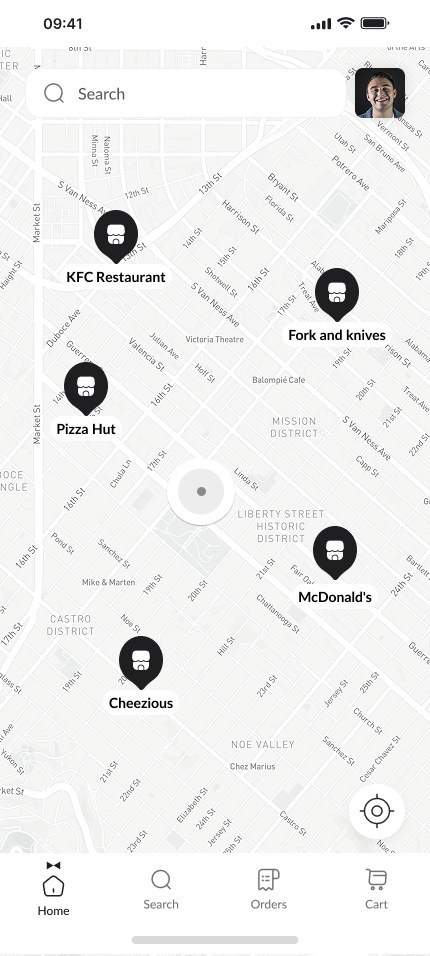
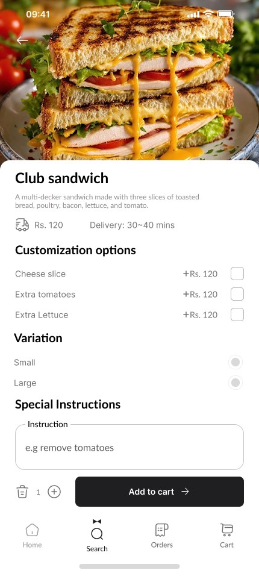
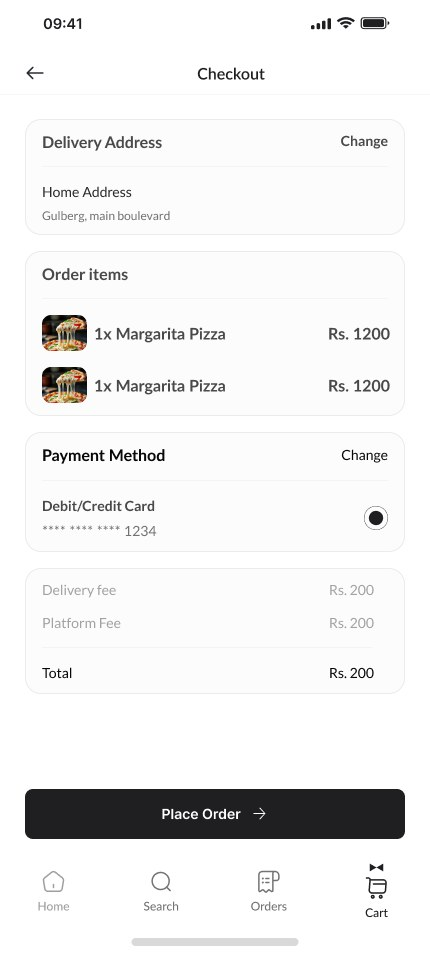
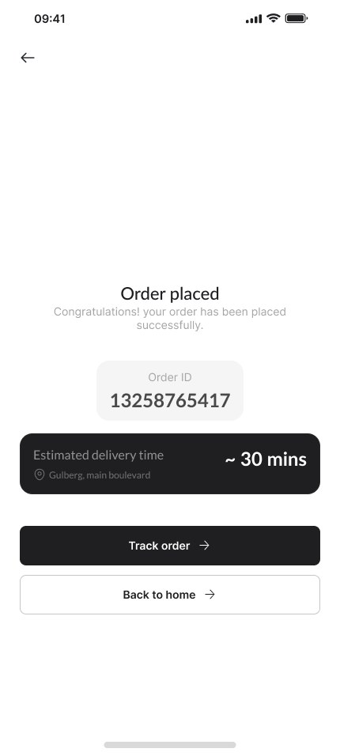
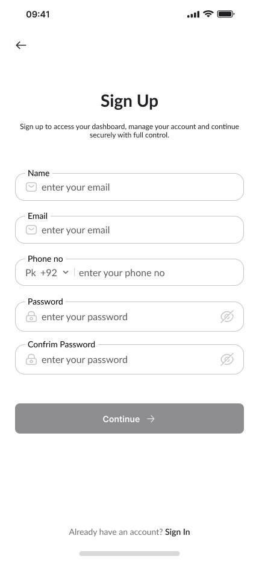
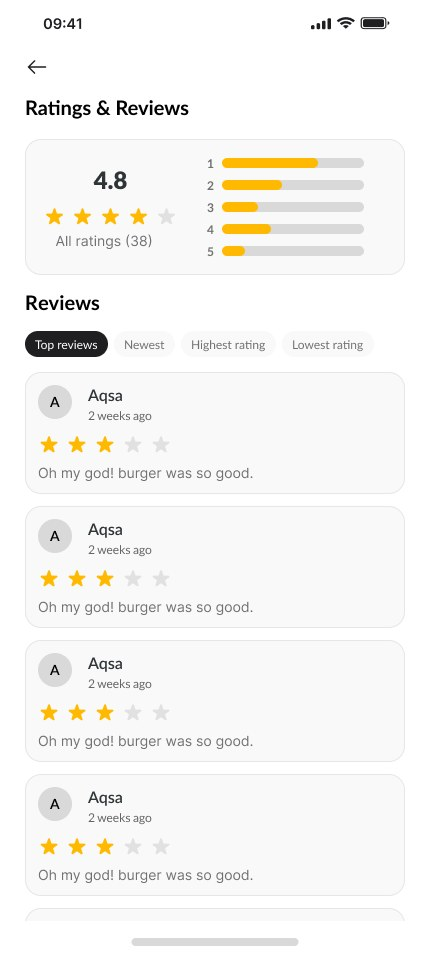
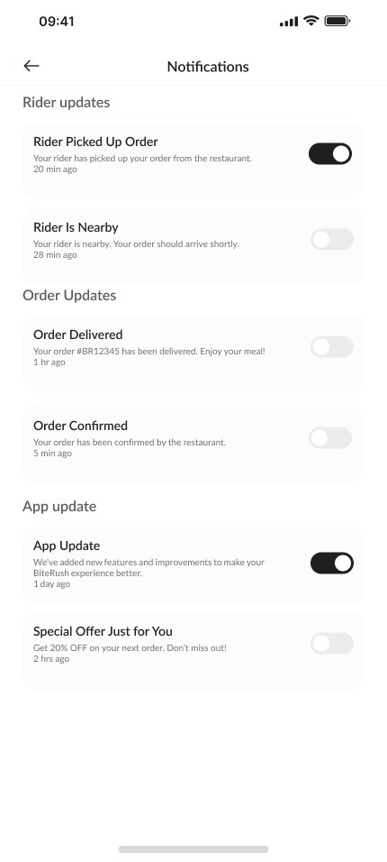

Overview
Bite Rush brings restaurants, menus and delivery into one simple flow. Users can find food on a live map, browse popular dishes, customize their order and track it until it arrives.
Delicious food, delivered fast.
A mobile app for discovering nearby restaurants, customizing your order and getting your favorite food delivered in minutes.
Bite Rush brings restaurants, menus and delivery into one simple flow. Users can find food on a live map, browse popular dishes, customize their order and track it until it arrives.
Food apps often feel cluttered. Busy menus, too many colors and long checkouts make a hungry user work too hard before they can order.
A calm, monochrome interface where the food photography does the talking, clear cards and a short checkout that takes just a few taps.
Studied popular delivery apps and the habits of people ordering food on the go.
Mapped the journey from opening the app to placing and tracking an order.
Sketched low-fidelity layouts for discovery, menus, product details and checkout.
Built a monochrome UI with Lato and Inter so food images stand out.
Linked the screens into an interactive prototype to test the ordering flow.

A live map shows nearby restaurants at a glance, so users can pick a spot close to them and get their food faster.
Food categories, popular restaurants and recent searches help users decide quickly. Each restaurant page groups items by category with clear prices.

Add extra cheese, choose a size or leave special instructions, all on one screen before adding to cart.


Address, items, payment and total are shown on a single checkout screen. Once the order is placed, users see the estimated delivery time and can track it.
A warm, friendly sans-serif used for headings, dish names and prices. Its rounded details keep the app feeling approachable.
A clean, highly readable typeface used for buttons, labels and small details, so every action is easy to read at a glance.
Delicious Food Delivered Fast
Popular restaurants
Discover your nearby restaurants and get your favorite food delivered in minutes.
Place Order →
Bite Rush uses a monochrome palette on purpose: the interface stays quiet so the food photos bring the color. Here's that palette, stacked as a burger. Hover a layer to see its color, and click to copy the hex code.


